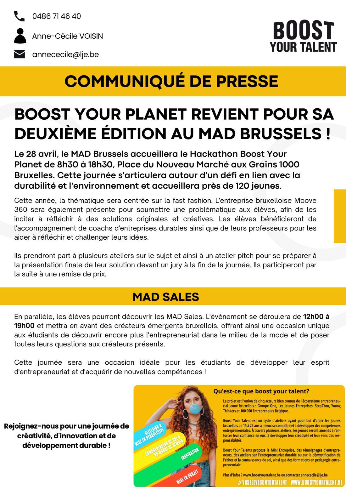
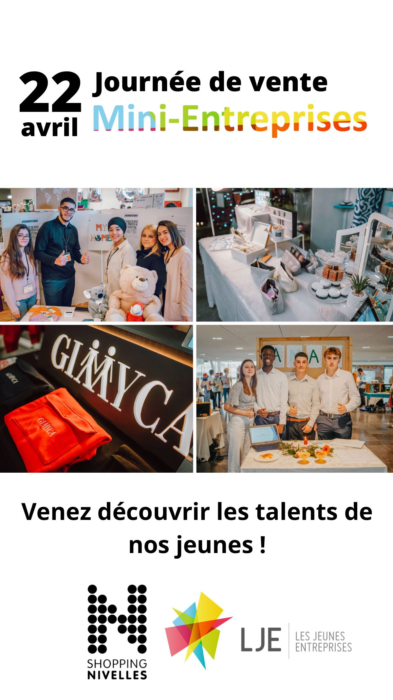
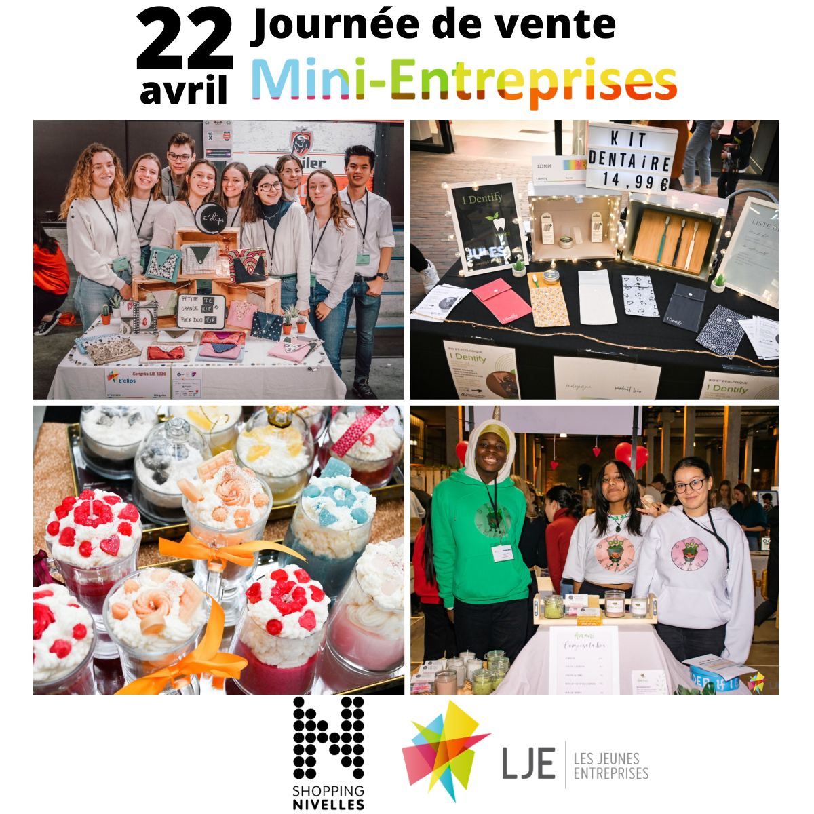
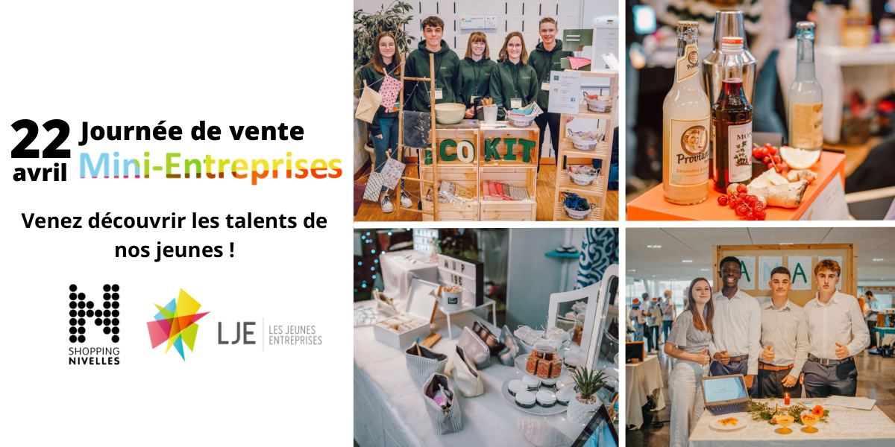
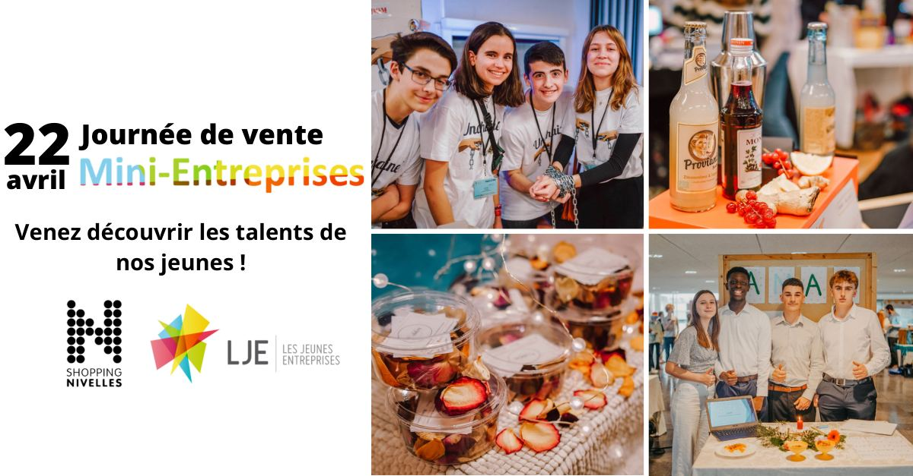
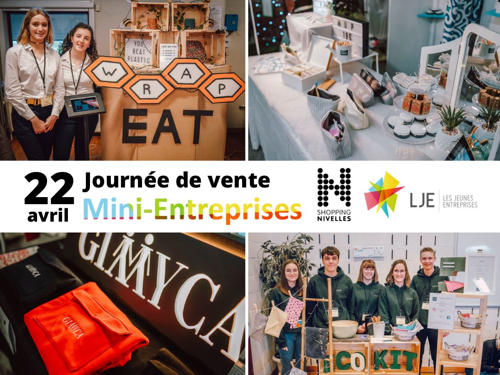
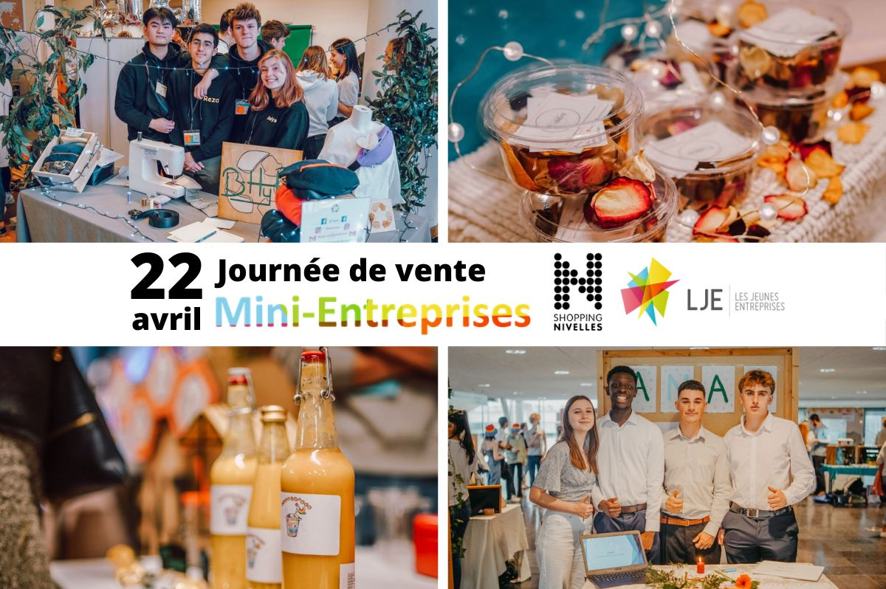
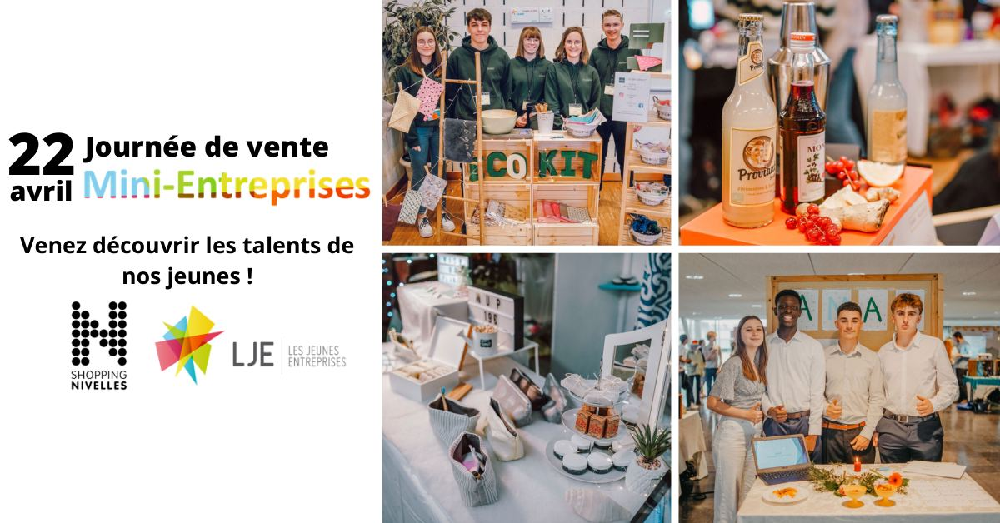

Case study · Content, communication & event marketing
LJE
Content, Communication & Event Marketing
Professional experience · InternshipInternship at Les Jeunes Entreprises (LJE), a Belgian non-profit that develops young people's entrepreneurial skills: writing, social media, visual content and the coordination of events, with colleagues and external partners.
ScopeOnly documented work is shown: a press release and a nine-format event campaign, plus the responsibilities listed in my internship record. No audience or performance figures are claimed for the communication produced.
CopywritingPress releaseSocial mediaVisual contentEvent marketingStakeholder coordination

01 · Context
A non-profit whose programmes live through events, and events that live through communication.
Les Jeunes Entreprises runs programmes such as the Mini-Entreprises, in which students create and run a small company during the school year, and takes part in Boost Your Talent, a cycle of workshops for young people in Brussels run with four other organisations.
Sales days, hackathons and workshops only work if schools, partners, the press and the public hear about them in time. That is where my internship sat: producing the words and visuals that carry those events.
02 · Challenge
Same message, different readers, different formats.
How do you make an event visible to journalists, schools, partners and the public, with material that stays coherent from a press release to a shopping-centre screen?
Each audience needs a different object: facts and quotes for the press, short visual posts for social media, co-branded assets for a partner venue. The identity has to survive every adaptation.
03 · My role
Writing, social media, visuals and coordination.
The skills below are the ones documented in my internship record. They were developed within a team, with colleagues and external partners.
Content & social media
- Writing content: articles and press releases
- Managing social media accounts
- Planning and scheduling publications
- Writing engaging messages
- Interacting with users
Visuals & events
- Creating visual material for communication
- Working with colleagues on the organisation of events
- Working with the organisation's external partners
- Coordinating tasks around events
04 · Approach
From the event brief to every channel.
- 01BriefEvent, date, place, audience, partners
- 02CopyPress release, articles, social posts
- 03Visuals & formatsOne master visual, adapted per channel
- 04Publish & coordinateScheduling, interaction, partners on site
05 · Communication insights
What each audience actually needs.
Working rules that came out of the deliverables, not survey results.
Journalists need facts first.
Date, time, place, theme, number of participants and partners appear in the first paragraph of the release; the story comes after.
One date, one sentence, one picture.
The Sales Day visuals carry the date, the event name and one invitation line. Everything else is photography.
Co-branding has to be visible on every format.
Shopping Nivelles and LJE logos sit together on all nine adaptations, at a size that survives a screen or a poster.
Each channel has its own shape.
Wide screens, square posts, portrait stories and A3 print need different crops of the same photos, not a stretched copy.
The participants are the message.
Photos of the young entrepreneurs and their products do more for “come and discover our young talents” than any illustration.
Communication depends on other people's timing.
Press releases, venue screens and social calendars only align when colleagues and partners share the same deadlines.
06 · Solution
Three streams of work.
Press & editorialWritten communicationArticles, press releases
- 1Press release: Boost Your Planet
Announcing the second edition of the hackathon at MAD Brussels, its fast-fashion theme, the workshops and the MAD Sales.
- 2Articles
Editorial content for the organisation's channels.
Social mediaCommunity & planningPosts, scheduling, interaction
- 3Publication planning
Scheduling posts around the events calendar.
- 4Messages and interaction
Writing posts and answering the community.
EventsVisuals & coordinationCampaign assets, partners
- 5Mini-Entreprises Sales Day campaign
One visual adapted to nine formats for the venue and social media.
- 6Event coordination
Working with colleagues and external partners on event organisation.
07 · Deliverables
Two documented deliverables, shown in full.

Deliverable A · Press release
“Boost Your Planet returns for its second edition at MAD Brussels”
Press release written for Boost Your Talent, the workshop cycle LJE runs with four partner organisations. Structure: key facts in the lead, the programme, a second block for the parallel event, and a boxed “what is Boost Your Talent” for journalists who discover the project.
- Event
- Boost Your Planet hackathon, 2nd edition
- Where and when
- MAD Brussels, 28 April, 8:30–18:30
- Theme
- Sustainability, focused on fast fashion, with a challenge set by a Brussels company
- Programme
- Workshops, coaching, a pitch workshop, a final jury and an awards ceremony
- Participants
- About 120 young people
- In parallel
- MAD Sales, 12:00–19:00, emerging Brussels designers
Deliverable B · Multi-format campaign
Mini-Entreprises Sales Day: one campaign, nine formats.
Invitation to the Mini-Entreprises sales day at Shopping Nivelles, co-branded with LJE. The same photos, date and invitation line were adapted to every support the venue and the social channels needed. Click a format to see it full size.
3840 × 1080 · screen

1080 × 1920 · story
1200 × 1200 · post A3 · poster
A3 · poster

1200 × 600 · web
1640 × 856 · cover
1536 × 1152 · display
800 × 532 · web
1200 × 628 · social linkMessage“Journée de vente Mini-Entreprises” with the date, and the invitation “Venez découvrir les talents de nos jeunes !” on the formats with room for it.
ConsistencySame photo set, same typography, same colour accents and same logo pair on every adaptation.
AdaptationLandscape, square, portrait and print sizes, each with its own crop and text placement. Two date variants exist (22 April and, on the A3 poster, 15 April).
08 · Skills
Each skill, with where to check it.
Articles, press releases and social messages written for different readers.
→ Press releaseA release structured the way journalists read: facts, programme, context box.
→ Press releasePlanning publications, writing messages and interacting with users on the organisation's accounts.
→ My roleCreating visual material for communication; a Photoshop training followed at EPHEC supported this work.
→ Campaign formatsCampaign assets for a venue and its channels, aligned with the event's timing.
→ Sales Day campaignWorking with colleagues and external partners on the organisation of events.
→ My role09 · Key learnings
“Good communication is mostly logistics: the right words, in the right format, delivered before the people who need them have to act.”
- Write for the reader, not for the organisationA journalist, a parent and a partner venue open the same event with different questions.
- Design the master, then the declinationsNine formats are quick when the identity is fixed first and each crop is decided on purpose.
- Coordination is part of the jobDeadlines with colleagues and partners decide whether communication reaches people in time.
10 · Next: the data side
Data & analytics · Audience segmentation & Business Intelligence
Cryptobel
Same starting point, a different toolset: understanding an audience with social-media data, NLP, clustering and Power BI to support communication decisions.
View case study→